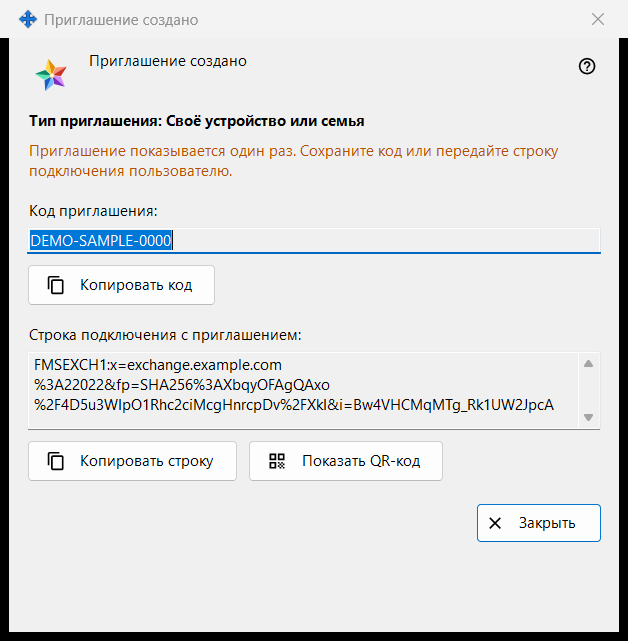
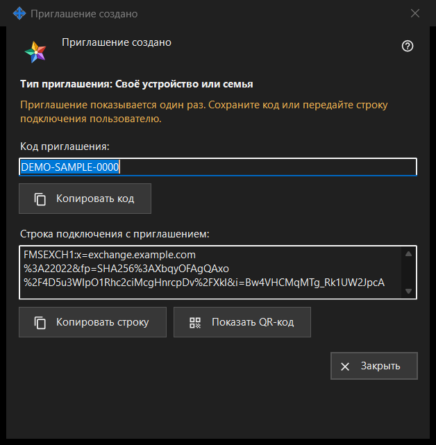

Приглашение создано
Назначение
Окно показывает новое приглашение один раз - сразу после «Создать» в окне «Создать приглашение». В нём одноразовый код и строка подключения, уже содержащая код, если программа сервера обмена смогла её составить.


Порядок действий
- Проверьте строку «Тип приглашения: ..».
- Нажмите «Копировать код», либо «Копировать строку» для строки с приглашением, либо «Показать QR-код».
- Передайте результат человеку по надёжному каналу.
- Нажмите «Закрыть». Тот же код повторно не показывается.
Элементы окна
Тип и предупреждение
Жирная строка «Тип приглашения: Своё устройство или семья» называет выбранный тип. Строка предупреждающего цвета сообщает: «Приглашение показывается один раз. Сохраните код или передайте строку подключения пользователю.» Когда окно закрывается, код и строка стираются из него. Если один из них потерян, отзовите приглашение в списке и создайте новое.
Код приглашения
В поле «Код приглашения:» (только чтение) показан код. «Копировать код» копирует его как секрет - в обход истории буфера обмена Windows (Win+V) и облачного буфера; строка ниже сообщает «Код приглашения скопирован в буфер обмена.» или «Не удалось скопировать код в буфер обмена.»
Строка подключения с приглашением
«Строка подключения с приглашением:» есть, только если строку удалось составить. Она называет сервер и несёт код, поэтому обращайтесь с ней как с кодом: «Копировать строку» тоже копирует её как секрет. Пароля вашей учётной записи в ней нет.
QR-код
«Показать QR-код» открывает картинку со строкой приглашения. Любой, кто её увидит, сможет воспользоваться приглашением, поэтому показывайте её только тому, кому она предназначена. Если картинку составить не удалось, строка сообщает «QR-код сейчас недоступен.»
Что делает другой человек
В окне учётной записи обмена («Войти..») человек вставляет строку кнопкой «Вставить» или открывает сохранённый файл. Строка с приглашением переключает окно на регистрацию: он выбирает логин, дважды вводит пароль и нажимает «Создать учётную запись». Неверное или уже использованное приглашение и занятый логин отклоняются с сообщением.
Закрыть
«Закрыть» завершает работу окна и стирает из него код и строку. Больше здесь ничего не сохраняется.
Настройки менеджера · Настройки общего доступа SFTP · Настройки сервера обмена